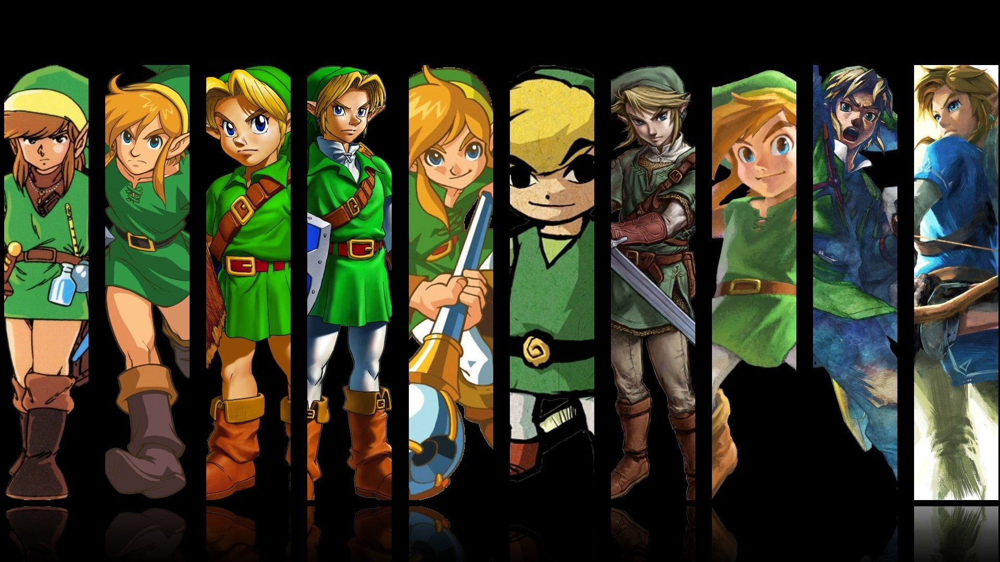
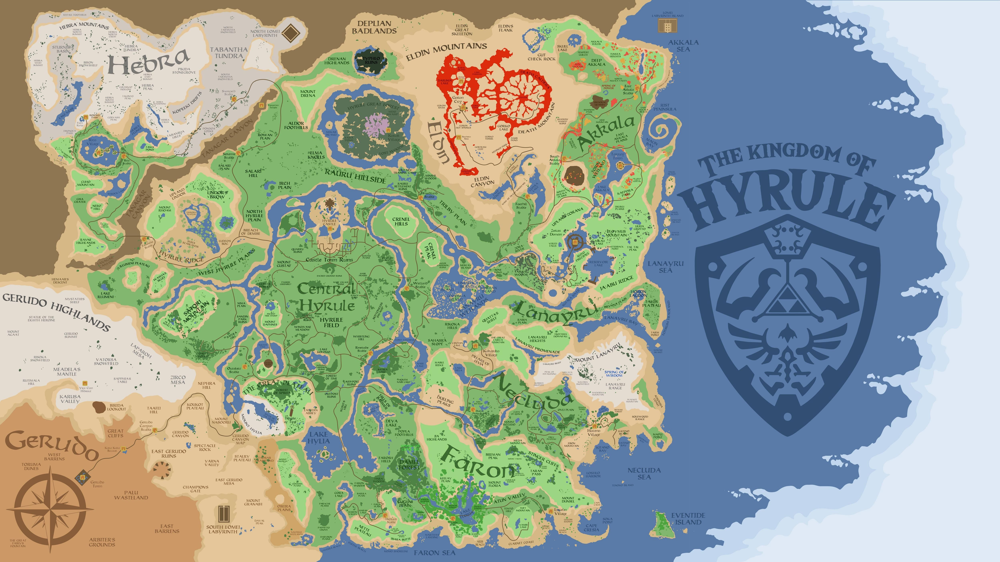
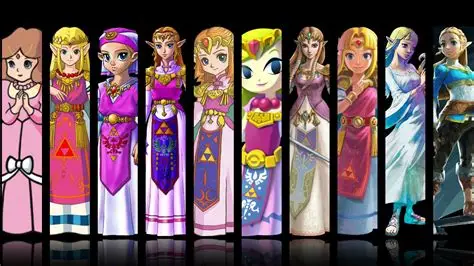
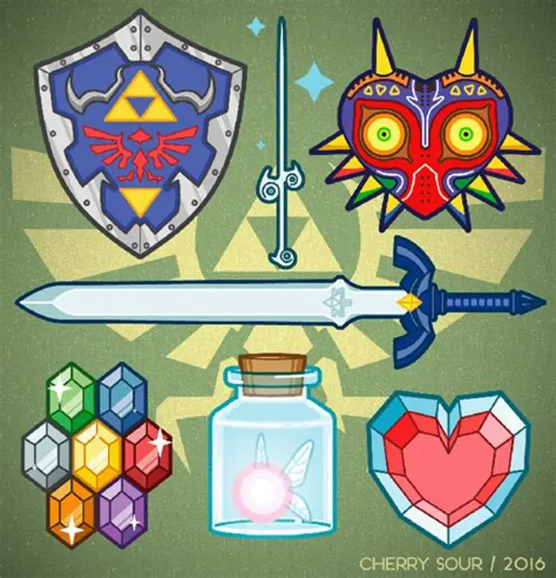
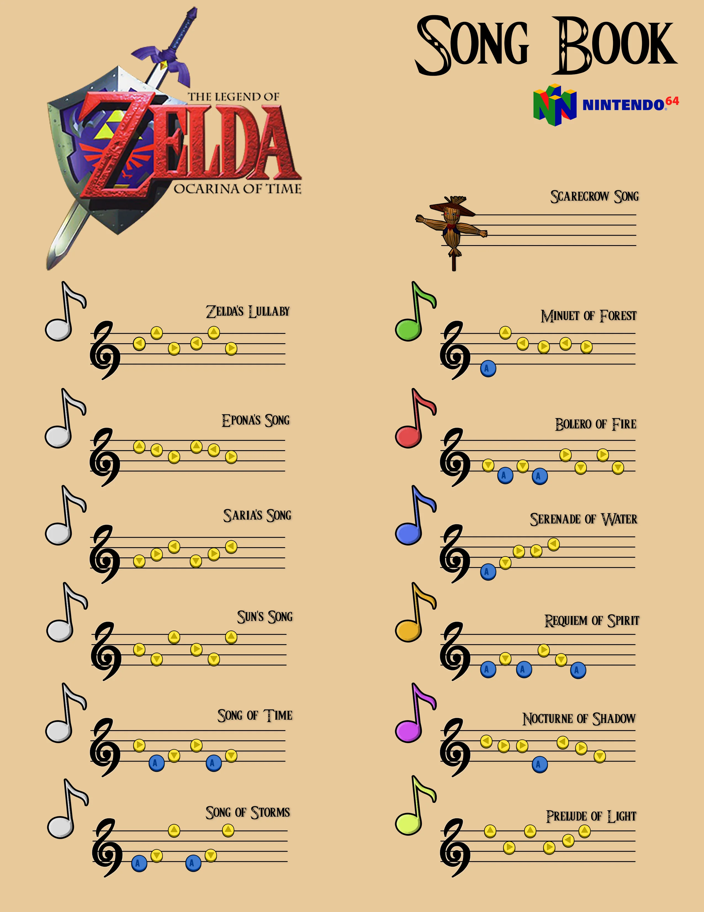
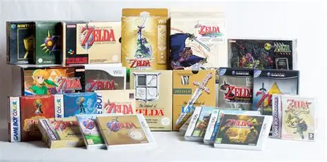

A jornada de Link
Aventura
Conheça as aventuras do herói escolhido para proteger Hyrule.
DESCUBRA HYRULE

Aventura
Conheça as aventuras do herói escolhido para proteger Hyrule.

Exploração
Explore lugares, vilas e paisagens marcantes do reino.

Personagens
Descubra a história e a importância da princesa de Hyrule.

Vilões
Conheça um dos maiores inimigos da família real.

Coleção
Veja itens conhecidos, como a Master Sword e o escudo Hylian.

Música
Relembre músicas que fazem parte das aventuras da franquia.
ORGANIZE SUA VISITA

NOSSA HISTÓRIA
O Hyrule Fest é um festival fictício criado para reunir fãs de The Legend of Zelda. O evento celebra os personagens, as músicas, os cenários e as aventuras dessa grande franquia.
Nosso objetivo é oferecer um espaço para compartilhar curiosidades e relembrar momentos especiais do universo Zelda.